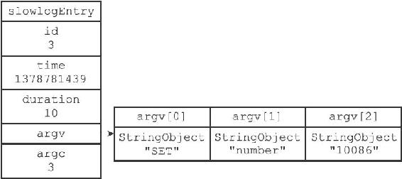
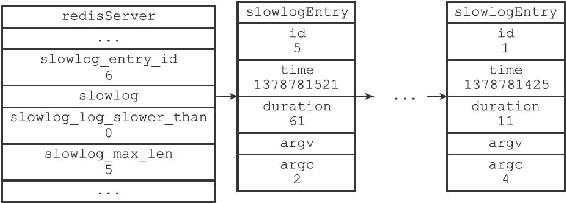

注意
注意23.1 慢查询记录的保存
服务器状态中包含了几个和慢查询日志功能有关的属性：
struct redisServer {
// ...
//
下一条慢查询日志的ID
long long slowlog_entry_id;
//
保存了所有慢查询日志的链表
list *slowlog;
//
服务器配置slowlog-log-slower-than
选项的值
long long slowlog_log_slower_than;
//
服务器配置slowlog-max-len
选项的值
unsigned long slowlog_max_len;
// ...
};
slowlog_entry_id属性的初始值为0，每当创建一条新的慢查询日志时，这个属性的值就会用作新日志的id值，之后程序会对这个属性的值增一。
例如，在创建第一条慢查询日志时，slowlog_entry_id的值0会成为第一条慢查询日志的ID，而之后服务器会对这个属性的值增一；当服务器再创建新的慢查询日志的时候，slowlog_entry_id的值1就会成为第二条慢查询日志的ID，然后服务器再次对这个属性的值增一，以此类推。
slowlog链表保存了服务器中的所有慢查询日志，链表中的每个节点都保存了一个slowlogEntry结构，每个slowlogEntry结构代表一条慢查询日志：
typedef struct slowlogEntry {
//
唯一标识符
long long id;
//
命令执行时的时间，格式为UNIX
时间戳
time_t time;
//
执行命令消耗的时间，以微秒为单位
long long duration;
//
命令与命令参数
robj **argv;
//
命令与命令参数的数量
int argc;
} slowlogEntry;
举个例子，对于以下慢查询日志来说：
1) (integer) 3
2) (integer) 1378781439
3) (integer) 10
4) 1) "SET"
2) "number"
3) "10086"
图23-1展示的就是该日志所对应的slowlogEntry结构。

图23-1 slowlogEntry结构示例
图23-2展示了服务器状态中和慢查询功能有关的属性：

图23-2 redisServer结构示例
·slowlog_entry_id的值为6，表示服务器下条慢查询日志的id值将为6。
·slowlog链表包含了id为5至1的慢查询日志，最新的5号日志排在链表的表头，而最旧的1号日志排在链表的表尾，这表明slowlog链表是使用插入到表头的方式来添加新日志的。
·slowlog_log_slower_than记录了服务器配置slowlog-log-slower-than选项的值0，表示任何执行时间超过0微秒的命令都会被慢查询日志记录。
·slowlog-max-len属性记录了服务器配置slowlog-max-len选项的值5，表示服务器最多储存五条慢查询日志。
注意
因为版面空间不足，所以图23-2展示的各个slowlogEntry结构都省略了argv数组。